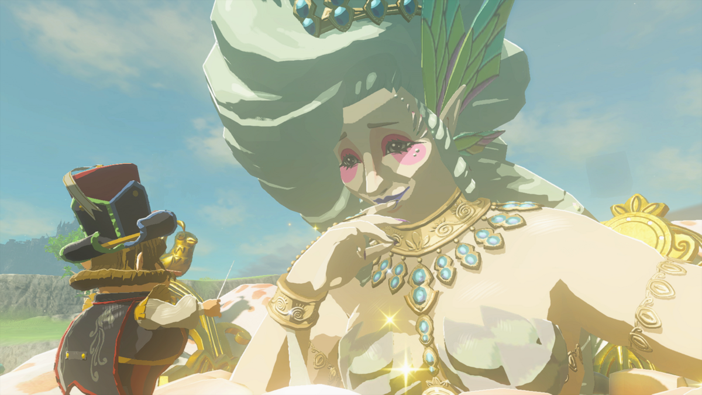
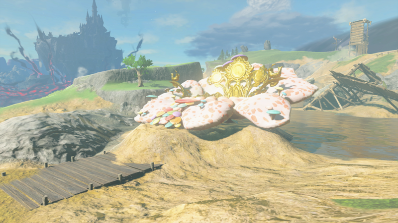
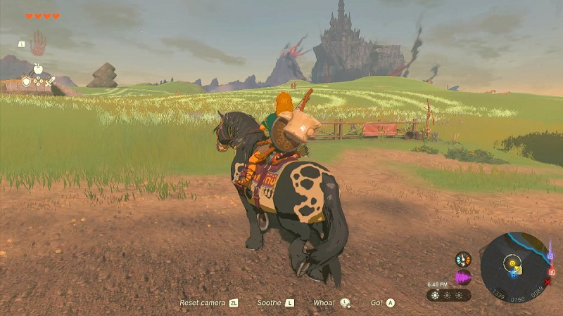
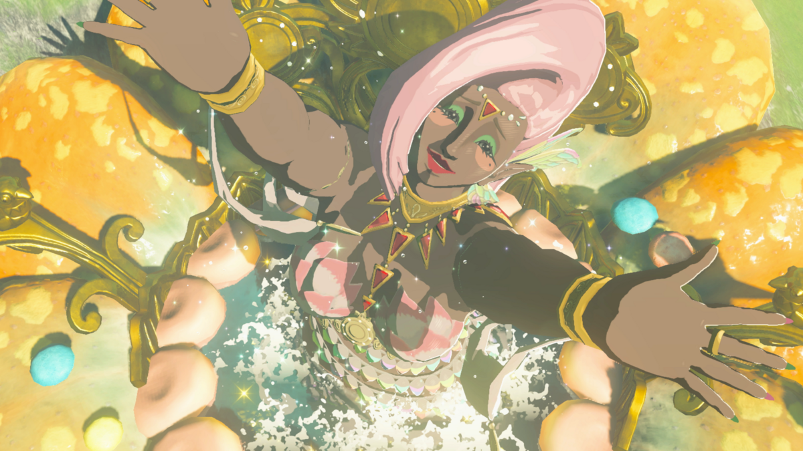

图：乐团的第一场演出——马车修好，拉到山上大妖精的花蕾前。
先说结论：乐团的第一场演出
乐团要给大妖精蒂拉演奏一场小夜曲，唤醒她。但马车坏了，动不了。先到白诘报社找沛恩触发“调查真相！传言中的塞尔达公主”（只需触发，不用做完），再去森林驿站找沛恩和乐团：修好马车、备一匹马套上牵引挽具，骑马沿山路慢慢把乐团送到山上的花蕾前。乐团一演奏，蒂拉就醒了——防具强化解锁，她还会把其他三位大妖精的位置标在地图上。
| 阶段 | 要做的事 |
| 触发 | 先到白诘报社找沛恩，触发传言中的塞尔达公主（不用做完） |
| 接任务 | 森林驿站找沛恩和乐团 |
| 修车 | 究极手装上两只车轮 |
| 备马 | 登记过的马 + 牵引挽具（3 点驿站点数兑换） |
| 送人 | 骑马沿山路慢慢送到山上花蕾处 |
| 收尾 | 乐团演奏，唤醒蒂拉 |
接取与奖励
| 项目 | 内容 |
| 接取 | 先到白诘报社找沛恩触发“调查真相！传言中的塞尔达公主”（只需触发，不用做完），再到森林驿站找沛恩和乐团 |
| 奖励 | 50 卢比（紫卢比）+ 白诘报社布料；解锁蒂拉的防具强化，蒂拉把其他三位大妖精的位置标在地图上 |

图：山上的花蕾就是大妖精蒂拉的泉，演奏一响她就醒了。
第一步：先到白诘报社找沛恩触发调查
这个任务有个触发条件：先去白诘报社找沛恩，触发“调查真相！传言中的塞尔达公主”。只需触发，不用做完——触发之后就可以去森林驿站找乐团了。
第二步：到森林驿站找沛恩和乐团
到森林驿站，沛恩和乐团（团长米洛央、小提琴手碧欧兰）都在马车边。和他们对话，乐团说马车掉了车轮，动不了，得先修车。
第三步：修好马车，装上车轮
马车旁边棚屋里有备用的车轮。用究极手拿两只车轮装到马车上，把车修好。
第四步：备马和牵引挽具
演出得靠马拉车：准备一匹登记过的马。森林驿站西边就有野马，抓一匹去驿站登记。牵引挽具用 3 点驿站点数兑换：在任意驿站翻开柜台上的书领取奖励，换到挽具后再到柜台把它装备到马上。驿站点数是每次在没去过的驿站找柜台接待员对话时得的。

图：马得先登记，再装上牵引挽具，才能拉车。
第五步：把马车连上马，送乐团上山
用究极手把马车连到马的挽具上，和乐团对话，让他们坐上马车。出发前先上山看一眼花蕾的位置，心里有数再走，然后骑马沿山路慢慢走，把乐团送到花蕾前。路颠簸了，米洛央和碧欧兰会下车，得走慢点、走稳点。
第六步：演奏唤醒蒂拉
到了花蕾前，乐团开始演奏小夜曲，大妖精蒂拉醒了。碧欧兰会给你一枚紫卢比（50 卢比）和白诘报社布料。蒂拉从此可以帮你强化防具，还会把其他三位大妖精——西莎、可秋拉、弥佳的位置标在地图上。

图：蒂拉醒来后，会把其他三位大妖精的位置标在地图上。
关键信息表
| 项目 | 内容 |
| 触发条件 | 先到白诘报社找沛恩，触发“调查真相！传言中的塞尔达公主”（不用做完） |
| 接取地点 | 森林驿站，找沛恩和乐团（米洛央、碧欧兰） |
| 修车 | 棚屋里的备用车轮，究极手装两只 |
| 马 | 登记过的马；森林驿站西边有野马 |
| 挽具 | 3 点驿站点数兑换，柜台装备到马上 |
| 送法 | 骑马沿山路慢慢走，颠簸了乐团会下车 |
| 奖励 | 50 卢比（紫卢比）+ 白诘报社布料；解锁蒂拉防具强化，蒂拉标出其他三位大妖精位置 |
容易翻车的地方
- 没触发调查就去森林驿站——先到白诘报社找沛恩触发传言中的塞尔达公主。
- 马没登记——野马得先去驿站登记，再装挽具。
- 挽具没装备到马上——兑换后还要去柜台装备。
- 赶路太颠簸——米洛央和碧欧兰会下车，沿山路慢慢走。
- 马车连不上——用究极手把马车连到马的挽具上，不是连到马身上。
一句话总结
先到白诘报社找沛恩触发调查，再去森林驿站修马车、备马套挽具，骑马沿山路慢慢把乐团送到山上，演奏唤醒蒂拉，防具强化解锁。